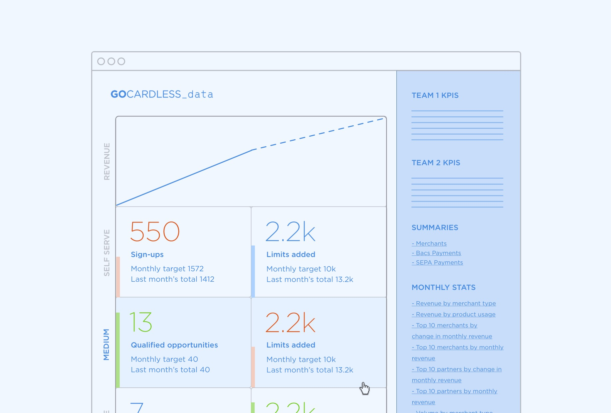
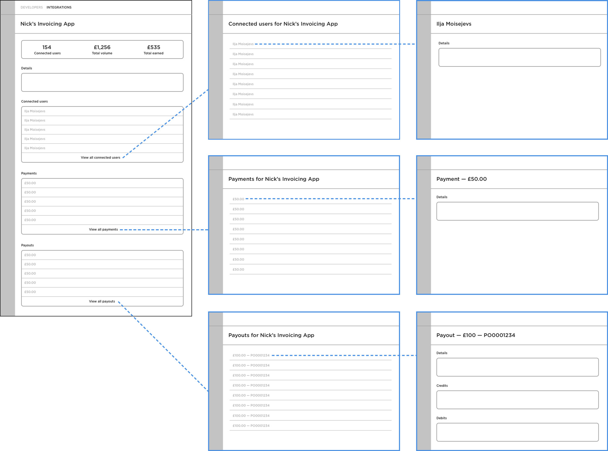
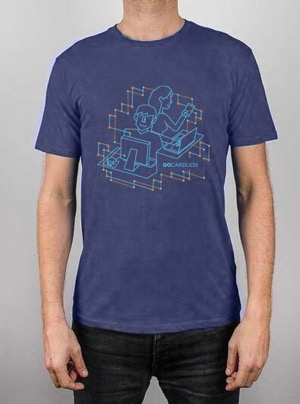
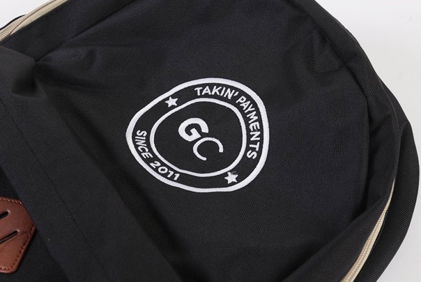

GoCardless
GoCardless is a global recurring payments provider. I was on the team for over five years in generalist and specialist roles across web & product design and full stack software engineering, which included everything from regularly shipping UI updates to helping manage the design needs of the business.
This page focuses on design projects, some of which were then implemented by me. I did many other engineering-only projects whilst at GoCardless, typically involving JavaScript, Ruby, Rails, Angular and React.
User onboarding
The GoCardless Dashboard serves a range of users from small businesses who want a ‘no code’ solution for quickly taking recurring payments to web developers using the app to help test out their integrations with the GoCardless API — however we felt the onboarding experience wasn’t doing enough to recognise the range of user types or making it clear to them what the best next steps for them were following creating their account.
I designed a set of journeys for the home screen of the dashboard to help explain the steps users needed to take to start getting value from GoCardless and a way of guiding them onto the right path depending on their use case.
This work was done as part of a wider project within a cross-functional, collaborative team including a product manager, another designer & several engineers. I kicked things off by looking into the onboarding flows of similar products and undertook research to better understand the key aspects of effective user onboarding. I produced wireframed user journeys to allow for quick feedback on the best solution before moving onto more polished designs ready to be implemented, some of which are shown below.
Payment lookup tool
GoCardless allows businesses to easily take recurring payments from their customers, however for many users the word ‘GoCardless’ appears on their customers’ bank statements rather than their own business name.
As a result, “Why is GoCardless on my bank statement?” was the most frequently asked question to the Support team. This created a large volume of manual & repetitive work that required explaining that GoCardless is processing the payment on behalf of another business (e.g a gym) and identifying the business in question for each customer that got in touch.
I designed a simple tool (and built the front end) that allows customers paying businesses via GoCardless to query their payment details to find out who they’re paying.
By launching this tool we were able to dramatically reduce the amount of time spent by the Support team on this issue and remove a manual process that would otherwise have worsened as the company scaled. This project involved working with the Support & Marketing teams to ensure the tool would provide the most value to users.
Some other projects
I designed and helped build an internal tool that enabled employees to self-serve their own data requests, reducing the manual work required by the Data team to answer questions they received on a daily basis from around the business.

I designed and helped build a new section of the GoCardless Dashboard that provided partners (apps that offer GoCardless as a way of taking payments from within their own product e.g. accounting software) with much more detail about the activity & performance of their GoCardless integration.

I designed and built many landing pages for the GoCardless website, which involved frequent collaboration with the Marketing team to ensure the designs communicated the right content to users.
I also had a lot of fun designing merchandise for the company including backpacks, tote bags, T-shirts, jumpers, beanie hats and more.
 
Get in touch
If you have upcoming projects that would benefit from my skills and experience then I’d love to hear from you — say hello at hi@james.sh.